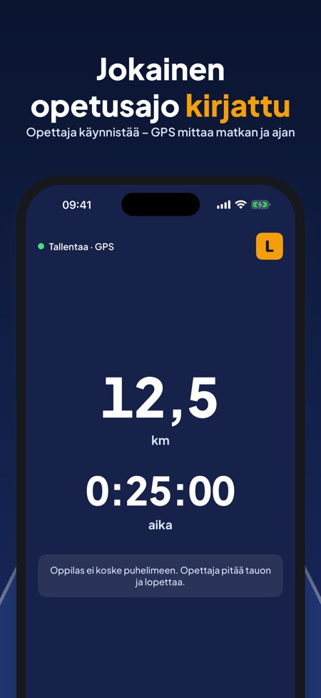
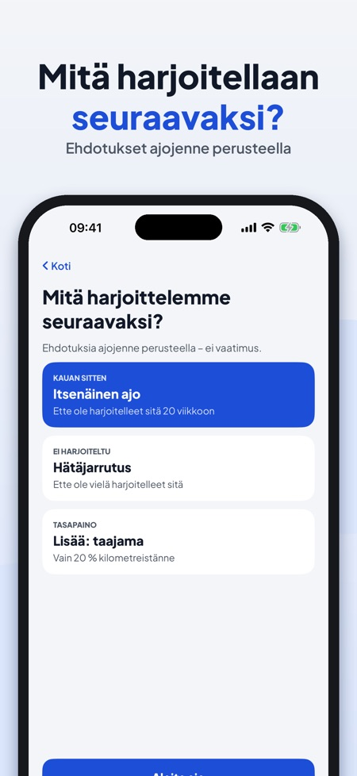
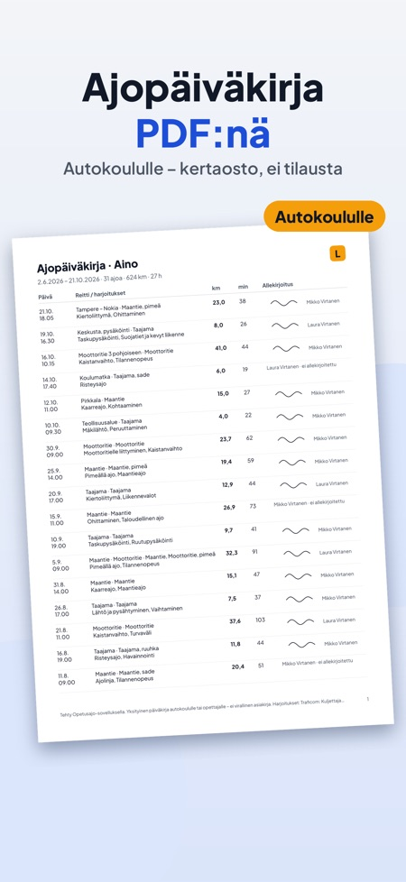

Kirjaa harjoitusajot GPS:llä. Pimeää jo neljältä? Kirjaa pimeällä ajo ja liukas keli – ja näe, milloin harjoittelitte niitä viimeksi. Opettaja käynnistää, GPS mittaa.



Ajopäiväkirja opetusluvalla ajamiseen – Suomessa, Ruotsissa ja Tanskassa. Tiliä ei tarvita.
Opettaja käynnistää tallennuksen, iPhonen GPS mittaa matkan ja ajan. Ajon jälkeen valitsette tietyypin, olosuhteet ja harjoitellut asiat, ja opettaja allekirjoittaa näytölle. Näin tiedätte aina, kuinka pitkällä olette ja mitä on vielä jäljellä ennen ajokoetta.
TALLENNA JOKAINEN AJO
• Aloita, tauko ja lopeta – isot painikkeet opettajalle
• Matka ja aika iPhonen GPS:llä, reittiviiva jokaisesta ajosta
• Lisää ajo ilman GPS:ää jälkikäteen
• Oppilas ei koske puhelimeen: ajonäkymää vain luetaan
AJON JÄLKEEN
• Taajama, maantie, moottoritie, pimeä, sade, liukas keli, ruuhka
• Harjoitellut asiat, muistiinpano ja opettajan allekirjoitus
HARJOITUKSET OPETUSSUUNNITELMAN MUKAAN
• B-luokan harjoituslista ryhmiteltynä: ajoneuvon käsittely, liikenne, erityisolosuhteet
• Jokainen kohta: ei harjoiteltu → harjoiteltu → varma
• Lista seuraa maata: Suomi, Ruotsi tai Tanska
NÄE, KUINKA PITKÄLLÄ OLETTE
• Kilometrit, tunnit, ajojen määrä ja aika pimeällä
• Oma tavoite (lakisääteistä kilometrimäärää ei ole)
• Ehdotukset seuraavaan ajoon: pitkään harjoittelemattomat asiat ja olosuhteet, joissa ei ole vielä ajettu
ENNEN AJOKOETTA
• Kokeen päivä ja paikka, lähtölaskenta ja tarkistuslista
• Viimeisen viikon suunnitelma asioista, jotka eivät vielä ole varmoja
• Muistutukset 14, 7 ja 1 päivä ennen koetta
• Linkit viranomaisten sivuille
HENKILÖT JA MUISTUTUKSET
• Oppilas ja enintään kaksi opettajaa voimassaoloaikoineen
• Muistutus 30 päivää ennen kuin lupa vanhenee
PDF AUTOKOULULLE
• Koko ajopäiväkirja PDF:nä: päivämäärät, matkat, harjoitukset ja allekirjoitukset
• PDF:n esikatselu myös ilman ostoa
Tallennus, ajot, yhteenvedot, harjoituslista, tarkistuslista, yksi opettaja ja kolme ensimmäistä allekirjoitusta toimivat ilman ostoa. Kertaosto (Opetusajo Full) avaa PDF-viennin, kaksi opettajaa allekirjoituksella, ehdotukset seuraavaan ajoon, tilastot pimeästä, moottoritiestä ja taajamasta sekä suunnitelman ennen ajokoetta. Ei tilausta, ei mainoksia.
Ajot ja sijainnit pysyvät iPhonessasi. Sijaintia käytetään vain, kun ajoa tallennetaan. Sovellus voi lähettää nimetöntä käyttötilastoa Google Analytics for Firebasen kautta (esim. käytetyt näkymät ja painikkeet, sovelluksen sisäiset ostot ja likimääräinen maa) – ei koskaan sijaintia tai reittejä. Sitä lähetetään vain, jos kytket sen päälle (aloitusnäkymässä tai asetuksissa).
Opetusajo on yksityinen harjoituspäiväkirja, ei virallinen asiakirja, eikä sillä ole yhteyttä Traficomiin, Transportstyrelseniin tai Færdselsstyrelseniin. Älä käytä puhelinta ajon aikana.